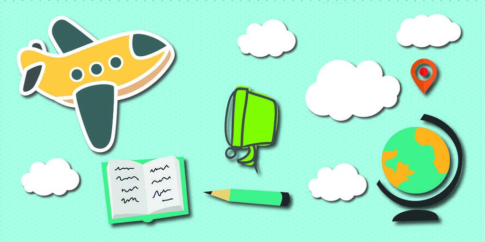

Investiga sobre el destino al que vas a viajar, incluyendo la cultura, el clima,
las atracciones turísticas y los requisitos de viaje como visas y vacunas.

2-Haz una lista de empaque:
Hacer una lista de las cosas que necesitas llevar te
ayudará a no olvidar nada importante y a empacar de manera más eficiente.
3-Reserva alojamiento con anticipación:
Reserva tu alojamiento con anticipación
para asegurarte de tener un lugar donde quedarte, especialmente en temporadas turísticas o en destinos populares.
4-Sé flexible:
Aunque es importante planificar, también
es importante ser flexible y estar abierto a cambios en el itinerario debido a imprevistos o nuevas oportunidades.
5-Mantén copias de documentos importantes:
Guarda copias de tus documentos importantes, como pasaporte,
seguro de viaje y reservas de alojamiento, en caso de que los originales se pierdan o sean robados.
6-Aprende algunas frases básicas del idioma local:
Aprender algunas frases
básicas del idioma local puede ser útil y demostrará tu interés en la cultura local.
7-Sé respetuoso con la cultura local:
Respeta las costumbres, tradiciones y normas
culturales del lugar que estás visitando, y sé consciente de cómo tus acciones pueden afectar a los locales.
8-Ten cuidado con tu salud:
Asegúrate de llevar contigo cualquier medicamento que necesites,
así como un botiquín de primeros auxilios básico, y sigue las recomendaciones de salud locales, como vacunarte si es necesario.
9-Disfruta del momento:
Por último, pero no menos importante, relájate y disfruta del viaje.
Toma tiempo para disfrutar de las vistas, conocer gente nueva y crear recuerdos inolvidables.